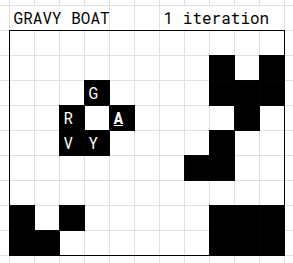
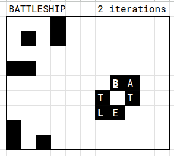
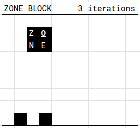
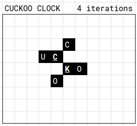
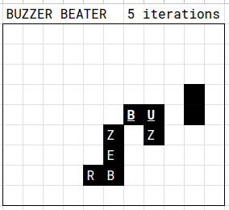
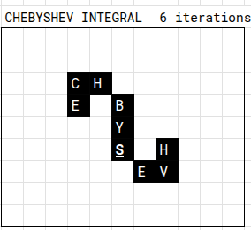
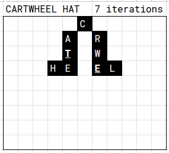
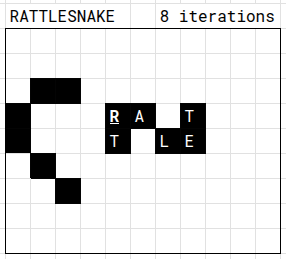
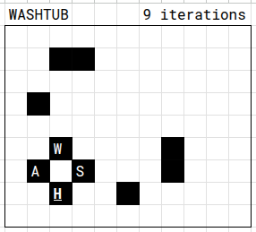
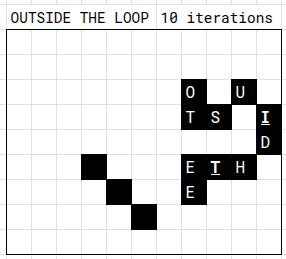

Solution: The End
Answer: A BLOCKBUSTER HIT
Written by AndrescuIII, juckter, kt3, lightbulbmeow, spacewalker
We are presented with grids associated with our answers. The flavortext alludes to a “game” of “life”, which may confirm a hunch that these are grids of Conway’s Game of Life.
The first insight is that our answers always end in a Game of Life pattern (e.g. RATTLESNAKE). We may then also realize that the length of the first part of the answers match the number of alive cells in each pattern.
Upon having this insight, we may try to hunt for these patterns in our grids, perhaps a few generations ahead.
The main aha of this puzzle is that simulating the grids up to the first appearance of each pattern gives us a clean ordering, based on the number of steps it took to reach the configuration.
We remember our insight that the length of the first part of each answer matches the number of cells in each pattern. Overlaying the first part’s letters to the cells in reading order, and taking the cells that were “there at the beginning” (or those that were in both the initial grid and the pattern) allows us to read the finishing skill: A BLOCKBUSTER HIT.
Author’s Notes
There were serious plans to make the grids the puzzle page backgrounds, but we decided to just go for the simpler implementation.
Appendix









